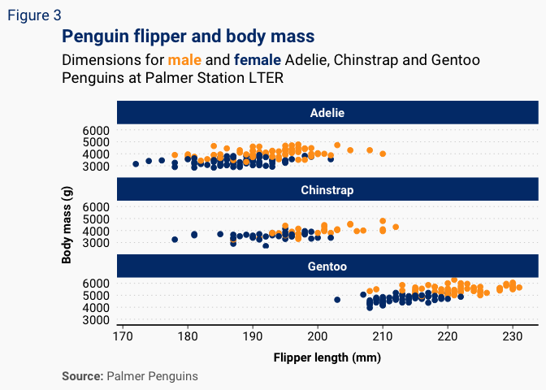
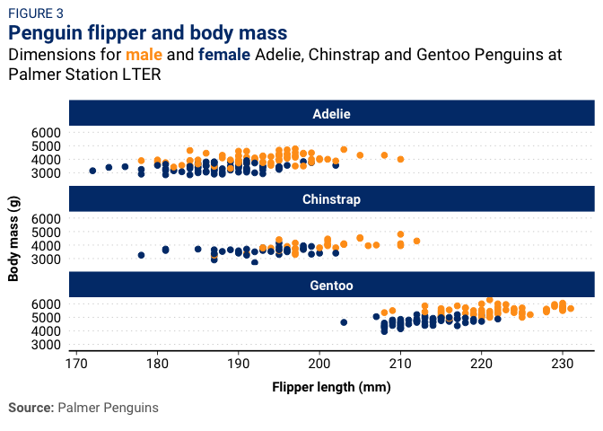
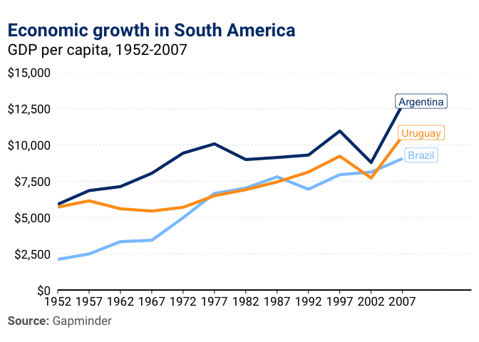

Overview
ggbrookings is a ggplot2 extension which
implements the Brookings style guide. It offers several color palettes,
a custom theme, and a few helper functions.
Installation
In order to install packages from GitHub you need to install the
remotes package. If you’re using a Windows computer you
will also need to install RTools, which is available here and on
the software center if you’re using a Brookings laptop.
install.packages("remotes")
remotes::install_github("BrookingsInstitution/ggbrookings", build_vignettes = TRUE)Note: If you are on a Brookings laptop, you may need
to change your timezone for devtools to work. This can be
done by running:
Sys.setenv(TZ = 'UTC')Fonts
Roboto is Brooking’s main font. You will need to install it by visiting Google fonts and clicking “Download family”.
Once you’ve done this, unzip and open each of the .ttf files and click install. Finaly, run the code chunk below to ensure Roboto is imported and registered:
If you run into any problems while installing fonts on a Windows computer try the following solution from this issue:
remove.packages("Rttf2pt1")
remotes::install_version("Rttf2pt1", version = "1.3.8") Usage
Currently, the ggbrookings package only has a few simple
user facing functions:
theme_brookings()overrides the defaultggplot2theme for a custom one which adheres to the Brookings style guide.scale_color_brookings()andscale_fill_brookings()provide several color palettes that are consistent with the Brookings brand and designed to provide color accessiblity.brookings_view_palette()is a helper function to see the colors from each palette and extract their hex codes.add_logo()adds a program/center logo to your plots after saving them. See the vignette on adding logos for more details.
Examples
I highly recommend that you install librarian by running
install.packages('librarian') as it lets you quickly
install, update, and attach packages from CRAN, GitHub, and Bioconductor
in one function call.
# Load the necessary libraries
librarian::shelf(tidyverse, palmerpenguins, ggbrookings)Scatterplot
In order to match the Brookings style in scatterplots you should set
geom_point(size = 2) as below:
ggplot(data = penguins,
aes(x = bill_length_mm,
y = bill_depth_mm,
group = species)) +
geom_point(aes(color = species,
shape = species),
size = 2,
alpha = 0.8) +
geom_smooth(method = "lm", se = FALSE, aes(color = species)) +
theme_brookings() +
scale_color_brookings(palette = "misc") +
labs(title = "Penguin bill dimensions",
subtitle = "Bill length and depth for Adelie, Chinstrap and Gentoo Penguins at Palmer Station LTER",
caption = '**Source:** Palmer Penguins',
tag = 'FIGURE 1',
x = "Bill length (mm)",
y = "Bill depth (mm)",
color = "Penguin species",
shape = "Penguin species") 
Histogram
ggplot(data = penguins, aes(x = flipper_length_mm)) +
geom_histogram(aes(fill = species),
alpha = 0.5,
position = "identity",
bins = 30) +
scale_fill_brookings(palette = "semantic3") +
theme_brookings() +
labs(x = "Flipper length (mm)",
y = "Frequency",
title = "Penguin flipper lengths",
caption = '**Source:** Palmer Penguins',
tag = 'FIGURE 2') +
scale_x_continuous(expand = expansion()) +
scale_y_continuous(expand = expansion())
You can change the size of your text proportionally by setting
theme_brookings(base_size = your_size) as shown below:
Faceting
ggplot(penguins, aes(x = flipper_length_mm,
y = body_mass_g)) +
geom_point(aes(color = sex),
size = 2,
show.legend = FALSE) +
theme_brookings() +
scale_color_brookings('brand1', na.translate = FALSE) +
labs(title = "Penguin flipper and body mass",
subtitle = "Dimensions for <span style = 'color:#FF9E1B;'>**male**</span> and <span style = 'color:#003A79;'>**female**</span> Adelie, Chinstrap and Gentoo Penguins at Palmer Station LTER",
caption = '**Source:** Palmer Penguins',
tag = 'FIGURE 3',
x = "Flipper length (mm)",
y = "Body mass (g)",
color = "Penguin sex") +
facet_wrap(. ~ species, nrow = 3, ncol = 1) +
scale_x_continuous(expand = expansion()) +
scale_y_continuous(expand = expansion())
Line plot
In order to match the Brookings style in line plots you should set
geom_line(size = 1.5) as below:
librarian::shelf(gapminder)
gapminder_filtered <-
gapminder %>%
filter(country %in% c('Argentina', 'Brazil', 'Uruguay'))
gapminder_filtered %>%
ggplot(aes(x = year, gdpPercap, color = country, label = country)) +
geom_line(size = 1.5) +
geom_label(data = gapminder_filtered %>% filter(year == last(year)),
aes(label = country,
x = year + 3,
y = gdpPercap + 250,
color = country)) +
theme_brookings(base_size = 16) +
guides(color = 'none') +
scale_x_continuous(breaks = seq(1952, 2007, 5),
limits = c(1952, 2012),
expand = expansion(mult = c(0, 0.1))) +
scale_y_continuous(labels = scales::label_dollar(),
limits = c(0, 15000), breaks = seq(0, 15000, 2500),
expand = expansion(0)) +
scale_color_brookings() +
labs(title = 'Economic growth in South America',
subtitle = 'GDP per capita, 1952-2007',
caption = '**Source:** Gapminder',
tag = 'FIGURE 4',
x = NULL,
y = NULL)